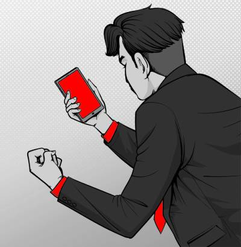
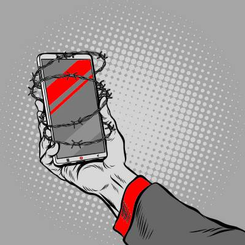
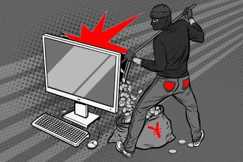

Internet Safety: Phishing
Module Two: Common Phishing Tactics
What Do Phishing Attacks Look Like?
Phishing attacks are designed to work like bait.
They are designed to look like a real email from a legitimate business or person in order to trick people into sharing information that they otherwise would not share.
Phishing emails used to not be very sophisticated. They often used to have many spelling errors or have a strange sender's address. But now, phishing emails can look very, very genuine and can be very convincing.
They can even contain links to websites that look real. These websites are called 'spoofed websites' and are replicas of the real website.
Spoofed Websites and Malicious Links
The aim of phishing emails is to get information from people. Information like bank login details, login credentials to secured sites, Social Security Numbers and important passwords.
Scammers can't get this information if people just read the email and then go about their day. People need to give them this information.
This is where spoofed websites and malicious links take centre stage.
Spoofed websites are websites that have been created by scammers and hackers to look exactly like the websites of trusted businesses and organisations. They can look very real with working login pages.
Malicious links are links that when clicked can either take a user to a spoofed website, or can download malware onto a computer.
Common Elements in Phishing Emails
Phishing emails can be very simple or very sophisticated. But most phishing emails contain the same or similar elements:
-

- An emotion-based message: Most phishing emails rely on emotions. These emotions can be negative such as fear, anger or worry (your account is going to be suspended!) or they can be postive such as happiness or excitement (you have won a prize!). Phishing emails often try to get an emotional response from people because sometimes people act quickly without careful consideration when caught in an emotional response.
- Scenario One: If you do not respond quickly your account will be suspended or deleted. In order to stop this, you need to log in using a link or provider the scammers wit information.
- Scenario Two: You have won a prize, so you need to act quickly to get it.
- Scenario Three: Your HR team is changing a policy and you need to log in and agree to it soon.
- Some kind of link or download: Often, phishing emails will contain either a malicious link or an attachment. The link will often lead to a spoofed website, and the attachment will often contain malware. Sometimes, the attachment can contain malware known as ransomware, which will encrypt all data. Companies can only access their data if they pay the scammer.
- Scenario One: You need to open an attachment in order to view the policy.
- Scenario Two: You need to click on the link and enter your login information into the sign-on page.
- Scenario Three: You need to download a special program in order to delete a virus off of your computer.
- The sender is someone you trust: This is what makes phishing emails so difficult to spot. They take advantage of people's trust for one another and for companies or business that they use every day. Phishing emails are often 'sent' either from a person that you trust (your manager, your friend) or an organisation that you trust (your bank, a tax agency).
- Scenario One: An email from your boss asking you to buy gift cards.
- Scenario Two: An email from your bank telling you that your account is going to be suspended unless you log in to the site using the provided link.
- Scenario Three: An email from a debt collector saying that you need to send them your Social Insurance Number because you have been wronguflly convincted of a crime.
- A call to action of some kind: Phishing emails need a response of some kind. Advertisers call this kind of element in a message a call to action. It is exactly the same in phising emails. The scammers need you to take some kind of action once you have read the email, whether it is sending confidential information or logg in to a spoofed website.


